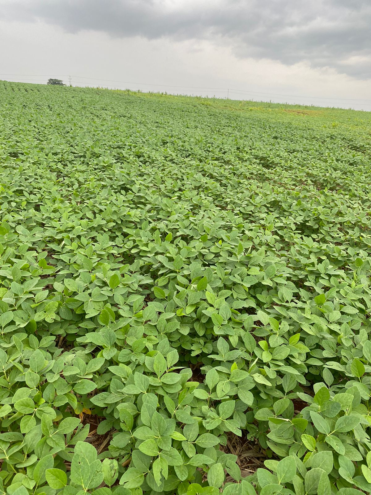

Enchentes no Rio Grande do Sul Afetam Projeções de Embarque de Soja no Brasil
Revisão nas estimativas de safra impacta exportações e quadro de oferta e demanda

Publicado em: 21/06/2024 às 19:40hs pelo Portal do Agronegócio
As recentes revisões nas estimativas de safra de soja do Brasil apontam para uma redução nas projeções de embarques em 2024, reflexo direto das enchentes que afetaram o Rio Grande do Sul em maio. Com a queda na colheita do estado, as previsões de produção e, consequentemente, de exportações, foram ajustadas.
De acordo com dados divulgados por Safras & Mercado, as exportações de soja do Brasil estão estimadas em 94,8 milhões de toneladas para 2024, representando uma queda de 7% em relação aos 101,863 milhões previstos para 2023. Em abril, as estimativas para 2024 eram de 96 milhões de toneladas.
Para 2024, Safras & Mercado projeta um esmagamento de 54,3 milhões de toneladas de soja, praticamente estável em relação às 54,165 milhões de 2023. A oferta total de soja para 2024 deve recuar 5%, atingindo 155,296 milhões de toneladas. A demanda total está projetada em 152,1 milhões de toneladas, uma redução de 4% em relação ao ano anterior. Com isso, os estoques finais deverão cair 31%, passando de 4,641 milhões para 3,196 milhões de toneladas.
A produção de farelo de soja deve se manter estável em 41,750 milhões de toneladas. No entanto, as exportações de farelo deverão reduzir 4%, totalizando 21,7 milhões de toneladas, enquanto o consumo interno está projetado em 18,6 milhões, uma queda de 6%. Os estoques de farelo devem aumentar 99%, atingindo 2,916 milhões de toneladas.
Para o óleo de soja, a produção deverá subir 1%, chegando a 10,960 milhões de toneladas. As exportações, entretanto, deverão cair 44%, totalizando 1,3 milhão de toneladas. O consumo interno de óleo de soja deve aumentar de 8,650 milhões para 9,650 milhões de toneladas, com o uso para biodiesel subindo 17% para 5,6 milhões de toneladas. Os estoques de óleo de soja estão previstos para aumentar 26%, alcançando 535 mil toneladas.